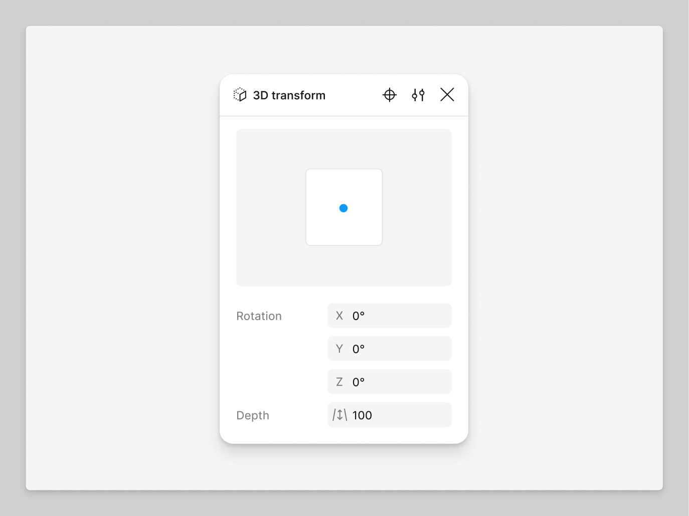
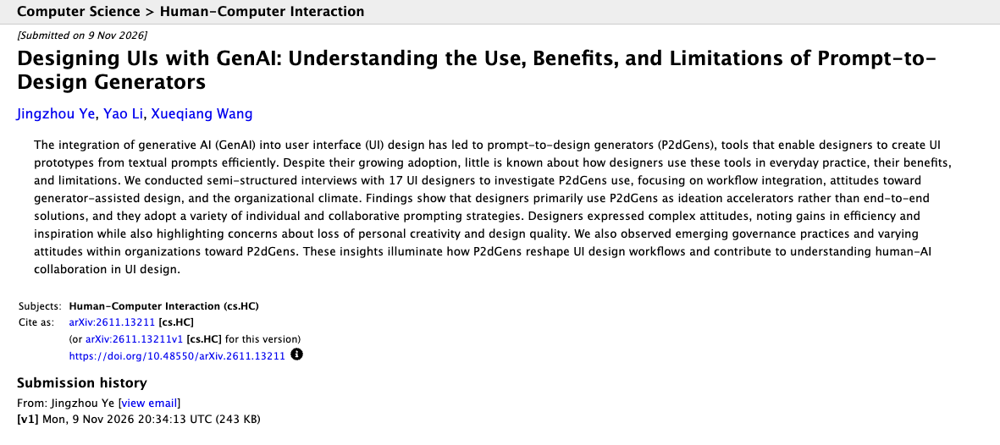
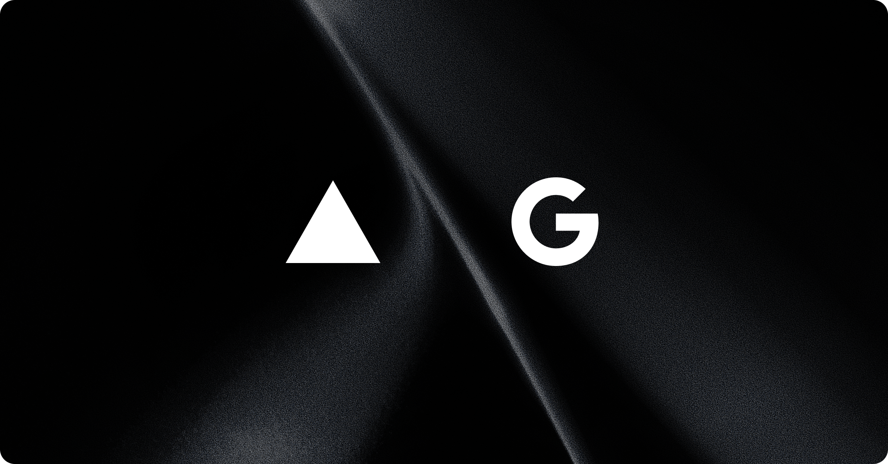
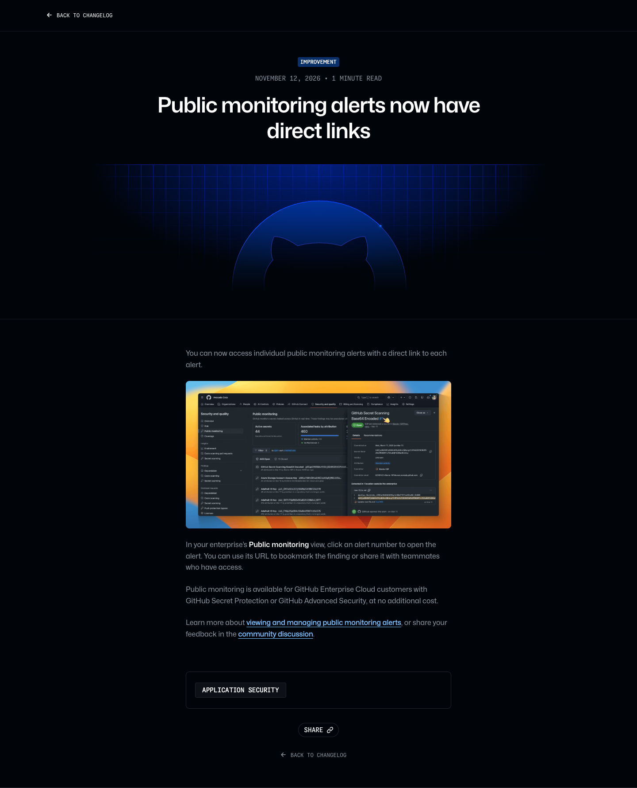
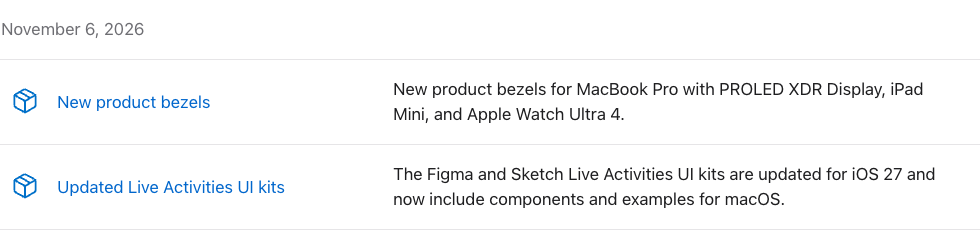
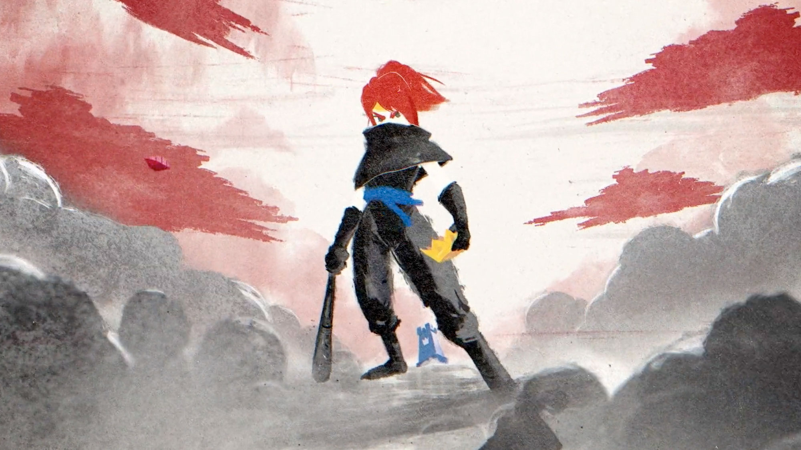

今天两条更新都在把“高级视觉”塞回设计画布：Figma 原生补上 3D transform、深度和透视，Framer 的 Agent 开始直接生成图像、纹理与 shader。表面看是创作入口变短，真正拉开差距的却是出口——Figma 能回到可编辑图层、CSS 与 MCP，Framer 要回到网站运行时和共享 credits。
一篇 17 位职业 UI 设计师的访谈也给这股热闹踩了刹车：prompt-to-design 目前更常被用于构思和原型，不是端到端替代。今天最有用的产品更新，恰好不是“再生成一张图”，而是让生成结果留在原生结构里，能继续改、能审、能交付。Stash 的新片甚至给了另一种提醒：当手工水彩被误认成 AI，制作过程本身也成了品牌资产。

Figma 11 月 12 日上线原生 3D transform：对象可以沿 x、y、z 轴旋转，用画布手柄即时预览，再用 Perspective 与 Depth 组成空间场景；它能和 Figma Motion 的关键帧配合，Dev Mode 则把结果映射为 CSS，官方发布说明还明确提到可通过 Figma MCP 交给 coding agent。功能覆盖所有套餐，但需要 Full seat 和文件编辑权限。
这条更新的价值不是把 Figma 变成 Blender，而是让卡片翻转、倾斜 mockup、空间化 hero 这些常见网页视觉留在组件与文字仍可编辑的画布里。边界也要记住：父框开启 Keep nested layers 3D 后，opacity、blend mode、shader、effects、clip content 以及父级 fill / stroke 都可能不可用；CSS 映射不等于浏览器里零差异复刻。还没实测，先不下结论，第一轮验证应盯 translateZ、perspective、transform-style 和移动端 GPU 成本。
Framer Agent 现在可以从提示生成图片、纹理和插画，也能对已选或导入的图片换主体、去背景、重设风格；同一入口还能生成和微调 halftone、bokeh、CRT、pencil、拖拽涂抹等 shader，并把生成图像与 shader 叠在一个网站画布里。
免费 workspace 有 500 credits，Basic 月付 $10 含 1,000 credits，Pro 月付 $30 含 3,000 credits；Agent 与 AI 功能消耗 workspace 共享 credits。更新页没有公布每种操作的消耗，也没说明失败生成是否扣费。它适合快速定 hero 的材质与交互方向，但采购前至少要记一次完整生成—调整—发布链路的 credits，别只看演示里最顺的那一遍。

这篇 11 月 9 日提交的预印本访谈了 17 位职业 UI 设计师。受访者把 prompt-to-design generator 主要用于构思与原型，而不是把一整套界面从提示直接交付；论文还整理了个人提示策略、协作提示方式，以及围绕质量、创造力和治理的顾虑。
样本只有 17 人，又是定性研究，不能拿来证明“行业已经如何”。但它至少把工具评估从单次出图拉回真实工作：下一轮团队测试不该只比较首屏好不好看，要记录需求澄清、多人接手、组件替换、异常状态、代码落地与回滚各花多少时间。

Vercel AI Gateway 已接入 google/gemini-4-hydrogen。模型页列出文本、图片、视频与文档输入，支持 tool calling 和 structured outputs，context window 与最大输出都标为 1M tokens；官方把它定位在与 Gemini 3.8 Flash 相近的 latency class，同时强调长任务、agentic coding、视觉推理和文档 / 表格 / 演示处理。
当前标价是输入 $1.50 / 1M tokens、输出 $7.50 / 1M tokens、cache read $0.08 / 1M tokens，Search 另计 $14 / 1K；未付费账户每 30 天有 $5 credits。长上下文不是免费的设计保险，完整塞入 Figma dump、截图和代码后，输出成本更快变成账单。还没实测，先用一个多页面组件迁移任务比对视觉理解、结构化输出和 token 日志，再决定是否替换现有模型。

GitHub 现在给每条 Public monitoring alert 一个可直接打开的 URL，授权成员可以收藏或分享具体 finding；这项能力面向带 Secret Protection 或 Advanced Security 的 GitHub Enterprise Cloud 客户，不额外收费。
小改动，但正好补上设计安全评审常见的断链：评论、工单和聊天终于可以指向同一条泄露证据，不必只贴截图。真正的流程闭环仍要保留权限回读、修复 owner 和关闭状态，链接本身不会替团队完成治理。

Apple 11 月 6 日更新了 Figma 与 Sketch 的 Live Activities UI kits：适配 iOS 27，并新增 macOS 组件与示例；同批还发布 MacBook Pro with PROLED XDR Display、iPad mini 与 Apple Watch Ultra 4 的产品边框。
Live Activity 已经不是只画一张 iPhone 锁屏稿。它可能出现在 iPhone、iPad、Dynamic Island、CarPlay、配对 Mac 与 Apple Watch，上下文尺寸与信息密度都不同；ActivityKit 的静态加动态数据总量仍受 4KB 限制。先拿官方 kit 建跨端状态矩阵，再谈动画和装饰，否则最先失控的是“同一状态在六个表面上分别长什么样”。

来源：Stash 文章https://www.stashmedia.tv/roof-studio-pedro-allevato-stay-hands-on-for-clash-royale/｜原片：Vimeohttps://vimeo.com/1245468644｜客户：Supercell｜代理：DAVID New York｜导演：Pedro Allevato｜制作：Roof Studio
Supercell 的 brief 明确要求不使用 AI，Roof Studio 和 Pedro Allevato 选择逐帧手绘水彩。文章披露的制作路径很实用：团队先重建 3D 背景，用它解决镜头移动、空间关系和 paint-over 参考，再把最终画面拉回不稳定的笔刷边缘、纸张颗粒、色块跳动与逐帧形变。也就是说，3D 在后台保证空间，2D 在前台保留表演。
目前 Vimeo player 与原片下载都返回 401，因此本次没有把 45 秒原片完整播放当成已核验事实；视觉判断来自 Stash 制作文章与 2000×1125、1920×1080 官方静帧。可见画面里，红、黑、灰先把爆炸与危险压成大色块，蓝色角色和细碎飞线再制造反差；角色轮廓会故意越过干净模型边界，避免 3D blocking 露出“搭台感”。
片子发布后被部分观众误认成 AI，团队才公开 behind-the-scenes 与制作说明。这件事比风格争论更有用：当生成内容充斥 feed，制作 provenance 已经是视觉系统的一部分。下次做 2D × 3D 产品片，可以先用 3D 锁镜头、碰撞和空间，再为关键帧设固定色板、笔刷与 paint-over 规则，并从项目开始就保留 blocking、线稿和合成对照；别等评论区质疑时才补过程。
飞书发布采用 fallback=image：保留一张 Stash 官方高清静帧与 Stash / Vimeo 链接，不插入返回 401 的 Vimeo iframe。
Stash 11 月 12 日只新增一条，已升级为今日主卡。其后的三条分别在 11 月 12 日与 11 月 11 日日报覆盖过；这里保留 feed 状态，避免把旧内容包装成新鲜消息。
Keep nested layers 3D 对现有效果链的破坏面。ClashterPieces – 30 seconds to detonation；Vimeo player 401，按规则使用 Stash 官方静态图降级，并保留双链接。核验说明：Figma Release Notes / Help Center、Framer Update / Pricing、arXiv、Vercel Changelog / model page、GitHub Changelog、Apple Developer、Stash WordPress API / 文章页与 Vimeo oEmbed 于 2026-11-13 回读。正文 7 张配图原始宽度为 980–2400px，已逐张目视检查；飞书文档、静态视频降级与群消息状态以最终 CLI 回读为准。